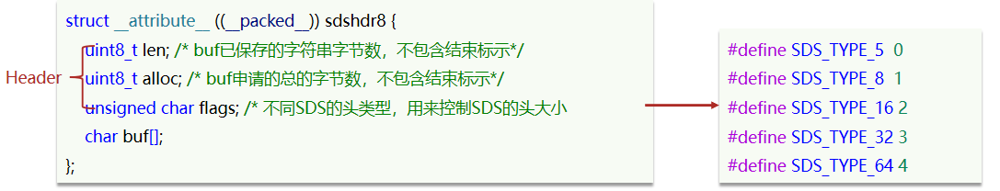
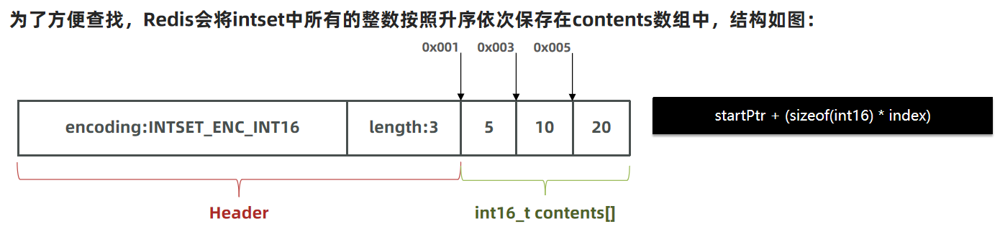
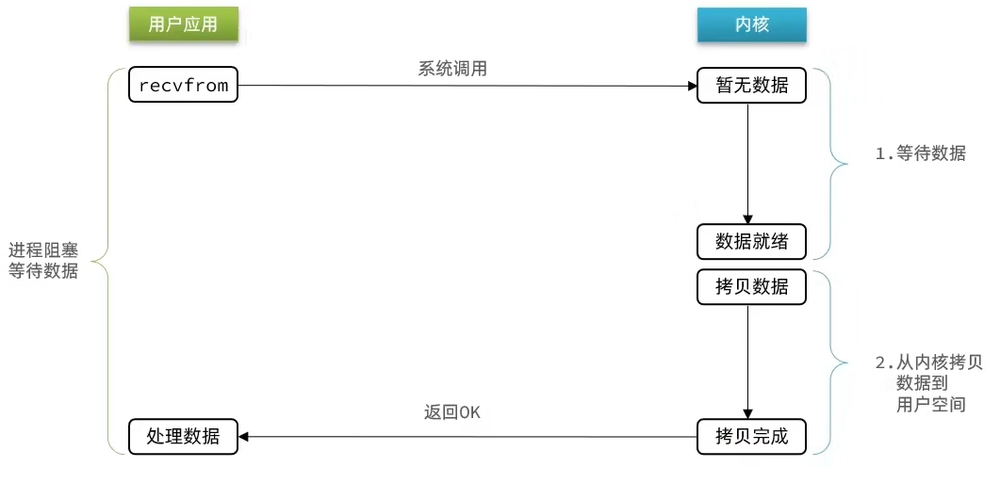
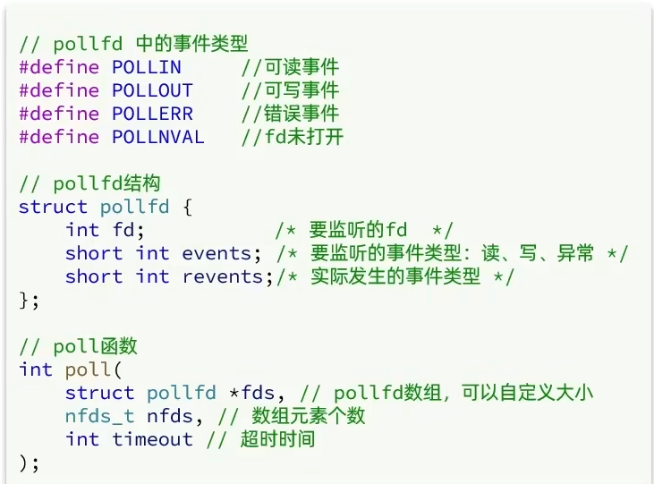
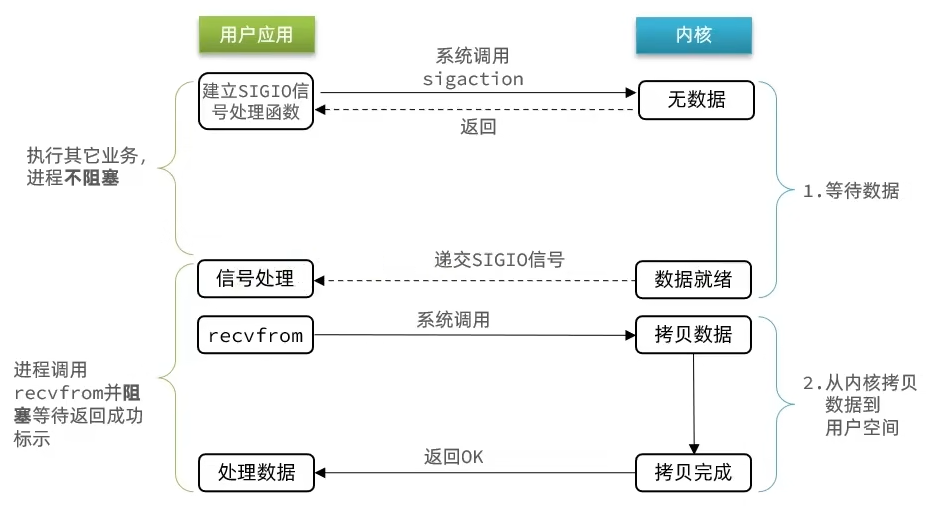
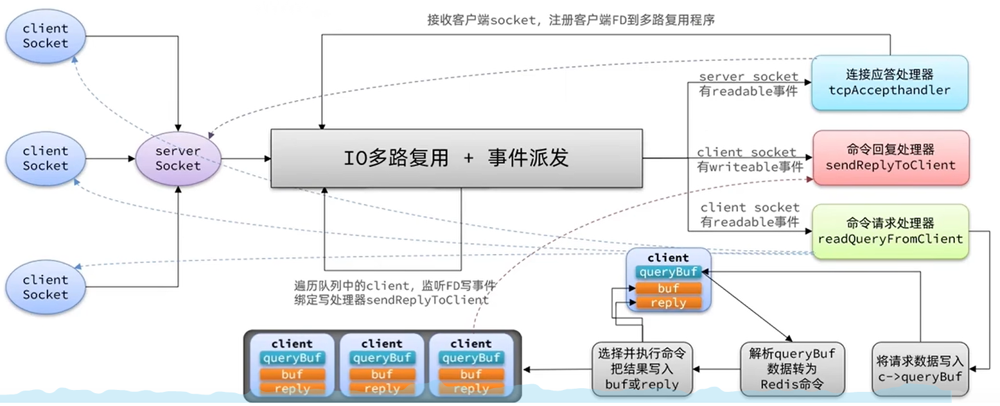

Redis
原理篇¶
数据结构¶
[!NOTE]
Redis底层基于 C语言 实现
动态字符串SDS¶
字符串是Redis中最常用的一种数据结构。不过Redis没有直接使用C语言中的字符串，因为C语言字符串存在很多问题：
- 获取字符串长度的需要通过运算
- 非二进制安全
- 不可修改
[!TIP]
二进制安全：
C 字符串依赖
\0判断结尾，若字符串中包含\0（如图片、音频等二进制数据），会被截断。
因此，Redis构建了一种新的字符串结构，称为简单动态字符串（Simple Dynamic String），简称SDS。

[!TIP]
Redis定义了多种大小不同的 SDS 结构，以上只是一个示例
SDS之所以叫做动态字符串，是因为它具备动态扩容的能力
-
假如我们要给SDS追加一段字符串，首先会申请新内存空间：
-
如果新字符串小于1MB，则新空间为扩展后字符串长度的两倍+1；
-
如果新字符串大于1MB，则新空间为扩展后字符串长度+1M+1。称为内存预分配。
[!NOTE]
SDS优点
- 获取字符串长度的时间复杂度为 O(1)
- 支持动态扩容
- 减少内存分配次数（分配内存有一定性能开销）
- 二进制安全
IntSet¶
IntSet是Redis中set集合的一种实现方式，基于整数数组来实现，并且具备长度可变、有序等特征。

其中的encoding包含三种模式，表示存储的整数大小不同：

为了方便查找，Redis会将intset中所有的整数按照升序依次保存在contents数组中，结构如图：

如果新插入的数字超出了int16_t的范围，intset会自动升级编码方式到合适的大小。 以当前案例来说流程如下：
- 升级编码为INTSET_ENC_INT32, 每个整数占4字节，并按照新的编码方式及元素个数扩容数组
- 倒序依次将数组中的元素拷贝到扩容后的正确位置
- 将待添加的元素放入数组末尾
- 最后，将inset的encoding属性改为INTSET_ENC_INT32，将length属性加1
Intset可以看做是特殊的整数数组，具备一些特点：
- Redis会确保Intset中的元素唯一、有序
- 具备类型升级机制，可以节省内存空间
- 底层采用二分查找方式来查询
Dict¶
Redis是一个键值型（Key-Value Pair）的数据库，我们可以根据键实现快速的增删改查。而键与值的映射关系正是通过Dict来实现的。
Dict由三部分组成，分别是：哈希表（DictHashTable）、哈希节点（DictEntry）、字典（Dict）

当我们向Dict添加键值对时，Redis首先根据key计算出hash值（h），然后利用 (h & sizemask) 来计算元素应该存储到数组中的哪个索引位置。


Dict扩容¶
Dict中的HashTable就是数组结合单向链表的实现，当集合中元素较多时，必然导致哈希冲突增多，链表过长，则查询效率会大大降低。可采取扩容解决。
Dict在每次新增键值对时都会检查负载因子（LoadFactor = used/size） ，满足以下两种情况时会触发哈希表扩容：
- 哈希表的 LoadFactor >= 1，并且服务器没有执行 BGSAVE 或者 BGREWRITEAOF 等后台进程
- 哈希表的 LoadFactor > 5
- 删除元素后如果 LoadFactor < 0.1，会触发哈希表收缩
Dict的rehash¶
不管是扩容还是收缩，必定会创建新的哈希表，导致哈希表的size和sizemask变化，而key的查询与sizemask有关。
因此必须对哈希表中的每一个key重新计算索引，插入新的哈希表，这个过程称为rehash。过程是这样的：
- 计算新hash表的realeSize，值取决于当前要做的是扩容还是收缩：
- 如果是扩容，则新size为第一个大于等于dict.ht[0].used + 1的2^n
-
如果是收缩，则新size为第一个大于等于dict.ht[0].used的2^n （不得小于4）
-
按照新的realeSize申请内存空间，创建dictht，并赋值给dict.ht[1]
- 设置dict.rehashidx = 0，标示开始rehash
- ~~将dict.ht[0]中的每一个dictEntry都rehash到dict.ht[1]~~
- 每次新增、查询、修改、删除操作时，都检查dict.rehashidx是否大于-1,如果大于则将dict.ht[0].table[rehashidx]的entry链表rehash到dict.ht[1]，并且将rehashidx++。直至所有数据迁移。
[!NOTE]
以上过程称为 渐进式rehash
- 将dict.ht[1]赋值给dict.ht[0]，给dict.ht[1]初始化为空哈希表，释放原来的dict.ht[0]的内存
- 在rehash过程中，新增操作，则直接写入ht[1]，查询、修改和删除则会在dict.ht[0]和dict.ht[1]依次查找并执行。这样可以确保ht[0]的数据只减不增，随着rehash最终为空
ZipList¶
ZipList 是一种特殊的“双端队列” ，由一系列特殊编码的连续内存块组成。可以在任意一端进行压入/弹出操作, 并且该操作的时间复杂度为 O(1)。

| 属性 | 类型 | 长度 | 用途 |
|---|---|---|---|
| zlbytes | uint32_t | 4 字节 | 记录整个压缩列表占用的内存字节数 |
| zltail | uint32_t | 4 字节 | 记录压缩列表表尾节点距离压缩列表的起始地址有多少字节，通过这个偏移量，可以确定表尾节点的地址。 |
| zllen | uint16_t | 2 字节 | 记录了压缩列表包含的节点数量。 最大值为UINT16_MAX （65534），如果超过这个值，此处会记录为65535，但节点的真实数量需要遍历整个压缩列表才能计算得出。 |
| entry | 列表节点 | 不定 | 压缩列表包含的各个节点，节点的长度由节点保存的内容决定。 |
| zlend | uint8_t | 1 字节 | 特殊值 0xFF （十进制 255 ），用于标记压缩列表的末端。 |
ZipListEntry¶
ZipList 中的Entry并不像普通链表那样记录前后节点的指针，因为记录两个指针要占用16个字节，浪费内存。而是采用了下面的结构：

- previous_entry_length：前一节点的长度，占1个或5个字节。
- 如果前一节点的长度小于254字节，则采用1个字节来保存这个长度值
-
如果前一节点的长度大于254字节，则采用5个字节来保存这个长度值，第一个字节为0xfe，后四个字节才是真实长度数据
-
encoding：编码属性，记录content的数据类型（字符串还是整数）以及长度，占用1个、2个或5个字节
- contents：负责保存节点的数据，可以是字符串或整数
Encoding编码¶
encoding编码分为字符串和整数两种
- 如果encoding是以“00”、“01”或者“10”开头，则证明content是字符串
| 编码 | 编码长度 | 字符串大小 |
|---|---|---|
| |00pppppp| | 1 bytes | <= 63 bytes |
| |01pppppp|qqqqqqqq| | 2 bytes | <= 16383 bytes |
| |10000000|qqqqqqqq|rrrrrrrr|ssssssss|tttttttt| | 5 bytes | <= 4294967295 bytes |
- 如果encoding是以“11”开始，则证明content是整数，且encoding固定只占用1个字节
| 编码 | 编码长度 | 整数类型 |
|---|---|---|
| 11000000 | 1 | int16_t（2 bytes） |
| 11010000 | 1 | int32_t（4 bytes） |
| 11100000 | 1 | int64_t（8 bytes） |
| 11110000 | 1 | 24位有符整数(3 bytes) |
| 11111110 | 1 | 8位有符整数(1 bytes) |
| 1111xxxx | 1 | 直接在xxxx位置保存数值，范围从0001~1101，减1后结果为实际值（0 ~ 12） |
ZipList的连锁更新问题¶
ZipList的每个Entry都包含previous_entry_length来记录上一个节点的大小，长度是1个或5个字节： 如果前一节点的长度小于254字节，则采用1个字节来保存这个长度值 如果前一节点的长度大于等于254字节，则采用5个字节来保存这个长度值，第一个字节为0xfe，后四个字节才是真实长度数据 现在，假设我们有N个连续的、长度为250~253字节之间的entry，因此entry的previous_entry_length属性用1个字节即可表示，如图所示：

如果在头部新加入一个entry且大小大于254字节，则之后的entry都要进行扩容更新
ZipList这种特殊情况下产生的连续多次空间扩展操作称之为连锁更新（Cascade Update）。新增、删除都可能导致连锁更新的发生。
QuickList¶
- 问题1：ZipList虽然节省内存，但申请内存必须是连续空间，如果内存占用较多，申请内存效率很低。怎么办？
-
答：为了缓解这个问题，我们必须限制ZipList的长度和entry大小。
-
问题2：但是我们要存储大量数据，超出了ZipList最佳的上限该怎么办？
-
答：我们可以创建多个ZipList来分片存储数据。
-
问题3：数据拆分后比较分散，不方便管理和查找，这多个ZipList如何建立联系？
- 答：Redis在3.2版本引入了新的数据结构QuickList，它是一个双端链表，只不过链表中的每个节点都是一个ZipList。

为了避免QuickList中的每个ZipList中entry过多，Redis提供了一个配置项：list-max-ziplist-size来限制。 如果值为正，则代表ZipList的允许的entry个数的最大值 如果值为负，则代表ZipList的最大内存大小，分5种情况：
- -1：每个ZipList的内存占用不能超过4kb
- -2：每个ZipList的内存占用不能超过8kb
- -3：每个ZipList的内存占用不能超过16kb
- -4：每个ZipList的内存占用不能超过32kb
- -5：每个ZipList的内存占用不能超过64kb
其默认值为 -2：

SkipList¶
SkipList（跳表）首先是链表，但与传统链表相比有几点差异：
- 元素按照升序排列存储
- 节点可能包含多个指针，指针跨度不同。


SkipList的特点：
- 跳跃表是一个双向链表，每个节点都包含score和ele值
- 节点按照score值排序，score值一样则按照ele字典排序
- 每个节点都可以包含多层指针，层数是1到32之间的随机数
- 不同层指针到下一个节点的跨度不同，层级越高，跨度越大
- 增删改查效率与红黑树基本一致，实现却更简单
RedisObject¶
Redis中的任意数据类型的键和值都会被封装为一个RedisObject，也叫做Redis对象，源码如下：

11种编码方式如下：
| 编号 | 编码方式 | 说明 |
|---|---|---|
| 0 | OBJ_ENCODING_RAW | raw编码动态字符串 |
| 1 | OBJ_ENCODING_INT | long类型的整数的字符串 |
| 2 | OBJ_ENCODING_HT | hash表（字典dict） |
| 3 | OBJ_ENCODING_ZIPMAP | 已废弃 |
| 4 | OBJ_ENCODING_LINKEDLIST | 双端链表 |
| 5 | OBJ_ENCODING_ZIPLIST | 压缩列表 |
| 6 | OBJ_ENCODING_INTSET | 整数集合 |
| 7 | OBJ_ENCODING_SKIPLIST | 跳表 |
| 8 | OBJ_ENCODING_EMBSTR | embstr的动态字符串 |
| 9 | OBJ_ENCODING_QUICKLIST | 快速列表 |
| 10 | OBJ_ENCODING_STREAM | Stream流 |
Redis中会根据存储的数据类型不同，选择不同的编码方式。每种数据类型的使用的编码方式如下：
| 数据类型 | 编码方式 |
|---|---|
| OBJ_STRING | int、embstr、raw |
| OBJ_LIST | LinkedList和ZipList(3.2以前)、QuickList（3.2以后） |
| OBJ_SET | intset、HT |
| OBJ_ZSET | ZipList、HT、SkipList |
| OBJ_HASH | ZipList、HT |
五种数据结构¶
String(❁´◡`❁)¶
String是Redis中最常见的数据存储类型
其基本编码方式是RAW，基于简单动态字符串（SDS）实现，存储上限为512mb。
如果存储的SDS长度小于44字节，则会采用EMBSTR编码，此时object head与SDS是一段连续空间。申请内存时只需要调用一次内存分配函数，效率更高。
[!TIP]
建议使用Redis存储字符串时尽量不超过44字节
- 如果⼀个String类型的value的值是数字，那么Redis内部会把它转成long类型来存储，从而减少内存的使用。
- 如果存储的字符串是整数值，并且大小在LONG_MAX范围内，则会采用INT编码：直接将数据保存在RedisObject的ptr指针位置（刚好8字节），不再需要SDS了。
List(●'◡'●)¶
Redis的List类型可以从首、尾操作列表中的元素
可考虑的实现方式如下：
- LinkedList ：普通链表，可以从双端访问，内存占用较高，内存碎片较多
- ZipList ：压缩列表，可以从双端访问，内存占用低，存储上限低
- QuickList：LinkedList + ZipList，可以从双端访问，内存占用较低，包含多个ZipList，存储上限高
[!TIP]
在3.2版本之前，Redis采用ZipList和LinkedList来实现List，当元素数量小于512并且元素大小小于64字节时采用ZipList编码，超过则采用LinkedList编码。
在3.2版本之后，Redis统一采用QuickList来实现List
Set╰(°▽°)╯¶
set是Redis中的单列集合，满足下列特点：
- 元素无序性
- 元素唯一性
- 支持求交集、并集、差集
[!TIP]
为了查询效率和唯一性，set采用HT编码（Dict）。Dict中的key用来存储元素，value统一为null。
当存储的所有数据都是整数，并且元素数量不超过
set-max-intset-entries时，Set会采用IntSet编码，以节省内存
Zset o(≧▽≦)o¶
ZSet也就是SortedSet，其中每一个元素都需要指定一个score值和member值，具有以下特征：
- 可以根据score值排序
- member必须唯一
- 可以根据member查询分数
[!TIP]
Redis采用如下两种数据结构实现zset
- SkipList：可以排序，并且可以同时存储score和ele值（member）
- HT（Dict）：可以键值存储，并且可以根据key找value


当元素数量不多时，HT和SkipList的优势不明显，而且更耗内存。因此zset还会采用ZipList结构来节省内存，不过需要同时满足两个条件：
- 元素数量小于zset_max_ziplist_entries，默认值128
- 每个元素都小于zset_max_ziplist_value字节，默认值64
[!TIP]
ziplist本身没有排序功能，而且没有键值对的概念，因此需要通过编码实现：
- ZipList是连续内存，因此score和element是紧挨在一起的两个entry， element在前，score在后
- score越小越接近队首，score越大越接近队尾，按照score值升序排列
Hash༼ つ ◕_◕ ༽つ¶
Hash结构与Redis中的Zset非常类似：
- 都是键值存储
- 都需求根据键获取值
- 键必须唯一
区别如下：
- zset的键是member，值是score；hash的键和值都是任意值
- zset要根据score排序；hash则无需排序
[!TIP]
当Hash中数据项比较少的情况下，Hash底层使用压缩列表ziplist进行存储数据，随着数据的增加，底层的ziplist就可能会转成dict
转换阈值：
hash-max-ziplist-entries 512
hash-max-ziplist-value 64
网络模型¶
用户空间和内核空间¶

为了让用户应用访问计算机硬件资源，计算机就必须要通过对外暴露的一些接口，才能访问到，从而简介的实现对内核的操控，但是内核本身上来说也是一个应用，所以他本身也需要计算机资源
因此需要把用户和内核隔离开，分为用户空间和内核空间
Linux系统为了提高IO效率，会在用户空间和内核空间都加入缓冲区：
-
写数据时，要把用户缓冲数据拷贝到内核缓冲区，然后写入设备
-
读数据时，要从设备读取数据到内核缓冲区，然后拷贝到用户缓冲区
针对这个操作：我们的用户在写读数据时，会去向内核态申请，想要读取内核的数据，而内核数据要去等待驱动程序从硬件上读取数据，当从磁盘上加载到数据之后，内核会将数据写入到内核的缓冲区中，然后再将数据拷贝到用户态的buffer中，然后再返回给应用程序，整体而言，速度慢，就是这个原因，为了加速，我们希望read也好，还是wait for data也最好都不要等待，或者时间尽量的短。
阻塞IO¶
[!NOTE]
在《UNIX网络编程》一书中，总结归纳了5种IO模型：
- 阻塞IO（Blocking IO）
- 非阻塞IO（Nonblocking IO）
- IO多路复用（IO Multiplexing）
- 信号驱动IO（Signal Driven IO）
- 异步IO（Asynchronous IO）

阻塞IO就是两个阶段都必须阻塞等待：
阶段一：
- 用户进程尝试读取数据（比如网卡数据）
- 此时数据尚未到达，内核需要等待数据
- 此时用户进程也处于阻塞状态
阶段二：
- 数据到达并拷贝到内核缓冲区，代表已就绪
- 将内核数据拷贝到用户缓冲区
- 拷贝过程中，用户进程依然阻塞等待
- 拷贝完成，用户进程解除阻塞，处理数据
非阻塞IO¶
非阻塞IO的recvfrom操作会立即返回结果而不是阻塞用户进程。
阶段一：
- 用户进程尝试读取数据（比如网卡数据）
- 此时数据尚未到达，内核需要等待数据
- 返回异常给用户进程
- 用户进程拿到error后，再次尝试读取
- 循环往复，直到数据就绪
阶段二：
- 将内核数据拷贝到用户缓冲区
- 拷贝过程中，用户进程依然阻塞等待
- 拷贝完成，用户进程解除阻塞，处理数据
- 可以看到，非阻塞IO模型中，用户进程在第一个阶段是非阻塞，第二个阶段是阻塞状态。虽然是非阻塞，但性能并没有得到提高。而且忙等机制会导致CPU空转，CPU使用率暴增。

IO多路复用¶
无论是阻塞IO还是非阻塞IO，用户应用在一阶段都需要调用recvfrom来获取数据，差别在于无数据时的处理方案：
- 如果调用recvfrom时，恰好没有数据，阻塞IO会使CPU阻塞，非阻塞IO使CPU空转，都不能充分发挥CPU的作用。
- 如果调用recvfrom时，恰好有数据，则用户进程可以直接进入第二阶段，读取并处理数据
[!WARNING]
在单线程情况下，只能依次处理IO事件，如果正在处理的IO事件恰好未就绪（数据不可读或不可写），线程就会被阻塞，所有IO事件都必须等待，性能自然会很差
通过FD，我们的网络模型可以利用一个线程监听多个FD，并在某个FD可读、可写时得到通知，从而避免无效的等待，充分利用CPU资源。
[!NOTE]
文件描述符（File Descriptor）：简称FD，是一个从0 开始的无符号整数，用来关联Linux中的一个文件。在Linux中，一切皆文件，例如常规文件、视频、硬件设备等，当然也包括网络套接字（Socket）。
IO多路复用是利用单个线程来同时监听多个FD，并在某个FD可读、可写时得到通知，从而避免无效的等待，充分利用CPU资源。不过监听FD的方式、通知的方式又有多种实现，常见的有：
- select
- poll
- epoll
其中select和pool相当于是当被监听的数据准备好之后，他会把你监听的FD整个数据都发给你，你需要到整个FD中去找，哪些是处理好了的，需要通过遍历的方式，所以性能也并不是那么好
而epoll，则相当于内核准备好了之后，他会把准备好的数据，直接发给你，咱们就省去了遍历的动作。
[!TIP]
用IO复用模式，可以确保去读数据的时候，数据是一定存在的，他的效率比原来的阻塞IO和非阻塞IO性能都要高
IO多路复用-select¶
select是Linux最早是由的I/O多路复用技术：
简单说，就是我们把需要处理的数据封装成FD，然后将整个FD发给内核，内核会检查数据是否就绪（没有就绪则休眠，直到数据就绪将其唤醒），数据就绪后，再将准备好的FD集合写回到用户态中去，用户态也需要去进行遍历，然后找到对应准备好数据的节点，再去发起读请求
这种模式下他虽然比阻塞IO和非阻塞IO好，但是依然有需要频繁的传递fd集合，频繁的去遍历FD等问题

IO多路复用-poll¶
poll模式对select模式做了简单改进，但性能提升不明显
IO流程：
- 创建pollfd数组，向其中添加关注的fd信息，数组大小自定义
- 调用poll函数，将pollfd数组拷贝到内核空间，转链表存储，无上限
- 内核遍历fd，判断是否就绪
- 数据就绪或超时后，拷贝pollfd数组到用户空间，返回就绪fd数量n
- 用户进程判断n是否大于0,大于0则遍历pollfd数组，找到就绪的fd
与select对比：
- select模式中的fd_set大小固定为1024，而pollfd在内核中采用链表，理论上无上限
- 监听FD越多，每次遍历消耗时间也越久，性能反而会下降

IO多路复用-epoll¶
poll模式是对select和poll的改进，它提供了三个系统调用：
eventpoll
[!NOTE]
会创建如下数据结构
红黑树 ---> 记录要监听的FD
链表 ---> 一个链表，记录就绪的FD
epoll_ctl
[!NOTE]
将要监听的数据添加到红黑树上去，并且给每个fd设置一个监听函数，这个函数会在fd数据就绪时触发，会把fd把数据添加到list_head中去
epoll_wait
[!NOTE]
当调用这个函数的时候，先创建events数组，然后检查list_head（会有等待时间，依据数据结构的配置），list_head中有数据会将数据放入到events数组中，用户应用收到响应后，就可以去取数据
IO多路复用-事件通知机制¶
当FD有数据可读时，我们调用epoll_wait（或者select、poll）可以得到通知。但是事件通知的模式有两种：
- LevelTriggered：简称LT，也叫做水平触发。只要某个FD中有数据可读，每次调用epoll_wait都会得到通知。
- EdgeTriggered：简称ET，也叫做边沿触发。只有在某个FD有状态变化时，调用epoll_wait才会被通知。
举个栗子（￣︶￣）↗ ：
- 假设一个客户端socket对应的FD已经注册到了epoll实例中
- 客户端socket发送了2kb的数据
- 服务端调用epoll_wait，得到通知说FD就绪
- 服务端从FD读取了1kb数据回到步骤3（再次调用epoll_wait，形成循环）
[!TIP]
如果我们采用LT模式，因为FD中仍有1kb数据，则第⑤步依然会返回结果，并且得到通知 如果我们采用ET模式，因为第③步已经消费了FD可读事件，第⑤步FD状态没有变化，因此epoll_wait不会返回，数据无法读取，客户端响应超时。
结论：
- ET模式避免了LT模式可能出现的惊群现象
- ET模式最好结合非阻塞IO读取数据，相比LT更复杂一些
[!NOTE]
惊群现象
惊群现象是指在计算机系统中，当多个进程或线程同时等待同一个事件（如资源可用、信号触发等）时，当该事件发生时，所有等待者都被唤醒，但最终只有一个能成功获取资源，其余的都因竞争失败而不得不重新进入等待状态的现象。
信号驱动IO¶
信号驱动IO是与内核建立SIGIO的信号关联并设置回调，当内核有FD就绪时，会发出SIGIO信号通知用户，期间用户应用可以执行其它业务，无需阻塞等待。

不足：
当有大量IO操作时，信号较多，SIGIO处理函数不能及时处理可能导致信号队列溢出，而且内核空间与用户空间的频繁信号交互性能也较低。
异步IO¶
这种方式，不仅仅是用户态在试图读取数据后，不阻塞，而且当内核的数据准备完成后，也不会阻塞
由内核将所有数据处理完成，并由内核将数据写入到用户态中，然后才算完成，所以性能极高，不会有任何阻塞，全部都由内核完成，可以看到，异步IO模型中，用户进程在两个阶段都是非阻塞状态。

总结¶

Redis网络模型¶
[!IMPORTANT]
Redis到底是单线程还是多线程？
- 如果仅仅是Redis的核心业务部分（命令处理），答案是单线程
- 如果是整个Redis，那么答案就是多线程
为什么Redis要选择单线程？
- 抛开持久化不谈，Redis是纯内存操作，执行速度非常快，它的性能瓶颈是网络延迟而不是执行速度，因此多线程并不会带来巨大的性能提升。
- 多线程会导致过多的上下文切换，带来不必要的开销
- 引入多线程会面临线程安全问题，必然要引入线程锁这样的安全手段，实现复杂度增高，而且性能也会大打折扣

优化，将命令回复处理和读取并解析Redis命令改为多线程操作
当我们的客户端想要去连接我们服务器，会去先到IO多路复用模型去进行排队，会有一个连接应答处理器，他会去接受读请求，然后把读请求注册到具体模型中去，此时这些建立起来的连接，如果是客户端请求处理器去进行执行命令时，他会去把数据读取出来，然后把数据放入到client中， client去解析当前的命令转化为redis认识的命令，接下来就开始处理这些命令，从redis中的command中找到这些命令，然后就真正的去操作对应的数据了，当数据操作完成后，会去找到命令回复处理器，由其将数据写出。
通信协议-RESP¶
Redis是一个CS架构的软件，通信一般分两步（不包括pipeline和PubSub）：
-
客户端（client）向服务端（server）发送一条命令
-
服务端解析并执行命令，返回响应结果给客户端
因此客户端发送命令的格式、服务端响应结果的格式必须有一个规范，这个规范就是通信协议。
而在Redis中采用的是RESP（Redis Serialization Protocol）协议
[!TIP]
Redis 1.2版本引入了RESP协议
Redis 2.0版本中成为与Redis服务端通信的标准，称为RESP2
Redis 6.0版本中，从RESP2升级到了RESP3协议，增加了更多数据类型并且支持6.0的新特性--客户端缓存
但目前，默认使用的依然是RESP2协议，也是我们要学习的协议版本（以下简称RESP）。
在RESP中，通过首字节的字符来区分不同数据类型，常用的数据类型包括5种：
-
单行字符串：首字节是 ‘+’ ，后面跟上单行字符串，以CRLF（ "\r\n" ）结尾。例如返回"OK"： "+OK\r\n"
-
错误（Errors）：首字节是 ‘-’ ，与单行字符串格式一样，只是字符串是异常信息，例如："-Error message\r\n"
-
数值：首字节是 ‘:’ ，后面跟上数字格式的字符串，以CRLF结尾。例如：":10\r\n"
-
多行字符串：首字节是 ‘$’ ，表示二进制安全的字符串，最大支持512MB：
-
如果大小为0，则代表空字符串："$0\r\n\r\n"
-
如果大小为-1，则代表不存在："$-1\r\n"
-
数组：首字节是 ‘*’，后面跟上数组元素个数，再跟上元素，元素数据类型不限:

内存策略¶
Redis之所以性能强，最主要的原因就是基于内存存储。然而单节点的Redis其内存大小不宜过大，会影响持久化或主从同步性能。
我们可以通过修改redis.conf文件，添加下面的配置来配置Redis的最大内存：
maxmemory 1gb
当内存达到上限，就无法存储更多数据了。因此，Redis内部会有两套内存回收的策略：
- 内存过期策略
- 内存淘汰策略
内存过期¶
Redis不管有多少种数据类型，本质是一个KEY-VALUE的键值型数据库，而这种键值映射底层正式基于HashTable来实现的，在Redis中叫做Dict.
来看下RedisDB的底层源码：
typedef struct redisDb {
dict dict; / The keyspace for this DB , 也就是存放KEY和VALUE的哈希表*/
dict *expires; /* 同样是哈希表，但保存的是设置了TTL的KEY，及其到期时间*/
dict *blocking_keys; /* Keys with clients waiting for data (BLPOP)*/
dict *ready_keys; /* Blocked keys that received a PUSH */
dict *watched_keys; /* WATCHED keys for MULTI/EXEC CAS /
int id; / Database ID, 0 ~ 15 /
long long avg_ttl; / Average TTL, just for stats /
unsigned long expires_cursor; / Cursor of the active expire cycle. */
list *defrag_later; /* List of key names to attempt to defrag one by one, gradually. */
} redisDb;
- 面试题：Redis如何判断KEY是否过期呢？
答：在Redis中会有两个Dict，也就是HashTable，其中一个记录KEY-VALUE键值对，另一个记录KEY和过期时间。要判断一个KEY是否过期，只需要到记录过期时间的Dict中根据KEY查询即可。
Redis并不会在KEY过期时立刻删除KEY，因为要实现这样的效果就必须给每一个过期的KEY设置时钟，并监控这些KEY的过期状态。无论对CPU还是内存都会带来极大的负担。
Redis的过期KEY删除策略有两种：
- 惰性删除
- 周期删除
惰性删除¶
Redis会在每次访问KEY的时候判断当前KEY有没有设置过期时间，如果有，过期时间是否已经到期。
周期删除¶
通过一个定时任务，周期性的抽样部分过期的key，然后执行删除。
执行周期有两种：
- SLOW模式：Redis会设置一个定时任务
serverCron()，按照server.hz的频率来执行过期key清理 - FAST模式：Redis的每个事件循环前执行过期key清理（事件循环就是NIO事件处理的循环）。
SLOW模式规则：
- ① 执行频率受
server.hz影响，默认为10，即每秒执行10次，每个执行周期100ms。 - ② 执行清理耗时不超过一次执行周期的25%，即25ms.
- ③ 逐个遍历db，逐个遍历db中的bucket，抽取20个key判断是否过期
- ④ 如果没达到时间上限（25ms）并且过期key比例大于10%，再进行一次抽样，否则结束
FAST模式规则（过期key比例小于10%不执行）：
- ① 执行频率受
beforeSleep()调用频率影响，但两次FAST模式间隔不低于2ms - ② 执行清理耗时不超过1ms
- ③ 逐个遍历db，逐个遍历db中的bucket，抽取20个key判断是否过期
- ④ 如果没达到时间上限（1ms）并且过期key比例大于10%，再进行一次抽样，否则结束
内存淘汰¶
对于某些特别依赖于Redis的项目而言，仅仅依靠过期KEY清理是不够的，内存可能很快就达到上限。因此Redis允许设置内存告警阈值，当内存使用达到阈值时就会主动挑选部分KEY删除以释放更多内存。这叫做内存淘汰机制。
Redis每次执行任何命令时，都会判断内存是否达到阈值
Redis支持8种不同的内存淘汰策略：
noeviction： 不淘汰任何key，但是内存满时不允许写入新数据，默认就是这种策略。volatile-ttl： 对设置了TTL的key，比较key的剩余TTL值，TTL越小越先被淘汰allkeys-random：对全体key ，随机进行淘汰。也就是直接从db->dict中随机挑选volatile-random：对设置了TTL的key ，随机进行淘汰。也就是从db->expires中随机挑选。allkeys-lru： 对全体key，基于LRU算法进行淘汰volatile-lru： 对设置了TTL的key，基于LRU算法进行淘汰allkeys-lfu： 对全体key，基于LFU算法进行淘汰-
volatile-lfu： 对设置了TTL的key，基于LFU算法进行淘汰（推荐） -
LRU（
LeastRecentlyUsed），最近最久未使用。用当前时间减去最后一次访问时间，这个值越大则淘汰优先级越高。 -
LFU（
LeastFrequentlyUsed），最少频率使用。会统计每个key的访问频率，值越小淘汰优先级越高。

其中的lru就是记录最近一次访问时间和访问频率的。选择LRU和LFU时的记录方式不同：
- LRU：以秒为单位记录最近一次访问时间，长度24bit
- LFU：高16位以分钟为单位记录最近一次访问时间，低8位记录逻辑访问次数
逻辑访问次数
- ① 生成
[0,1)之间的随机数R- ② 计算
1/(旧次数 * lfu_log_factor + 1)，记录为P，lfu_log_factor默认为10- ③ 如果
R<P，则计数器+1，且最大不超过255- ④ 访问次数会随时间衰减，距离上一次访问时间每隔
lfu_decay_time分钟(默认1) ，计数器-1显然LFU的基于访问频率的统计更符合我们的淘汰目标，因此官方推荐使用LFU算法。